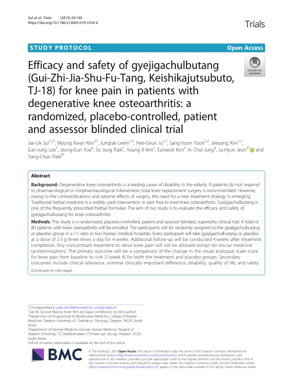

Efficacy and safety of gyejigachulbutang (Gui-Zhi-Jia-Shu-Fu-Tang, Keishikajutsubuto, TJ-18) for knee pain in patients with degenerative knee osteoarthritis: a randomized, placebo-controlled, patient and assessor blinded clinical trial
Sul JU, Kim MK, Leem J, Jo HG, Yoon Sh, Kim J, Lee EJ, Yoo JE, Park SJ, Kim YI, Kim E, Jung IC, Jeon JH, Park YC
Trials 20(1):140

첫 장 · 오픈액세스First page · open access
논문 소개Summary
퇴행성 무릎관절염에 계지가출부탕을 쓰는 무작위 배정, 위약 대조, 참여자·평가자 눈가림 임상시험의 프로토콜입니다. 두 곳의 한방병원에서 80명을 1대 1로 나누어 4주 동안 하루 세 번 2.5그램씩 복용하게 하고 치료가 끝난 뒤 4주를 더 추적합니다. 무릎 통증을 덜기 위한 다른 치료는 구제약물인 아세트아미노펜을 빼고 허용하지 않습니다. 일차 평가변수는 4주 시점 무릎 통증 시각아날로그척도의 변화이고, 이차로 임상적 의미와 최소임상중요차이, 기능장애, 삶의 질, 안전성을 봅니다. 프로토콜이라 결과는 없으며, 이 계획은 뒤에 결과 논문으로 이어져 일차 평가변수가 음성이었음이 보고되었습니다.
A protocol for a randomised, placebo-controlled, participant- and assessor-blinded trial of Gyejigachulbutang in degenerative knee osteoarthritis. At two Korean medicine hospitals, 80 patients will be allocated 1:1 and take 2.5 g three times daily for four weeks, with a further four weeks of follow-up after treatment ends. No concomitant treatment for knee pain is permitted apart from acetaminophen as rescue medication. The primary outcome is change in the visual analogue scale for knee pain at four weeks; secondary outcomes include clinical relevance and the minimal clinically important difference, disability, quality of life and safety. As a protocol it reports no results; the plan was later carried out and the results paper reported the primary outcome as negative.
인용Cite
Sul JU, Kim MK, Leem J, Jo HG, Yoon Sh, Kim J, Lee EJ, Yoo JE, Park SJ, Kim YI, Kim E, Jung IC, Jeon JH, Park YC. Efficacy and safety of gyejigachulbutang (Gui-Zhi-Jia-Shu-Fu-Tang, Keishikajutsubuto, TJ-18) for knee pain in patients with degenerative knee osteoarthritis: a randomized, placebo-controlled, patient and assessor blinded clinical trial. Trials. 2019;20(1):140. doi:10.1186/s13063-019-3234-6